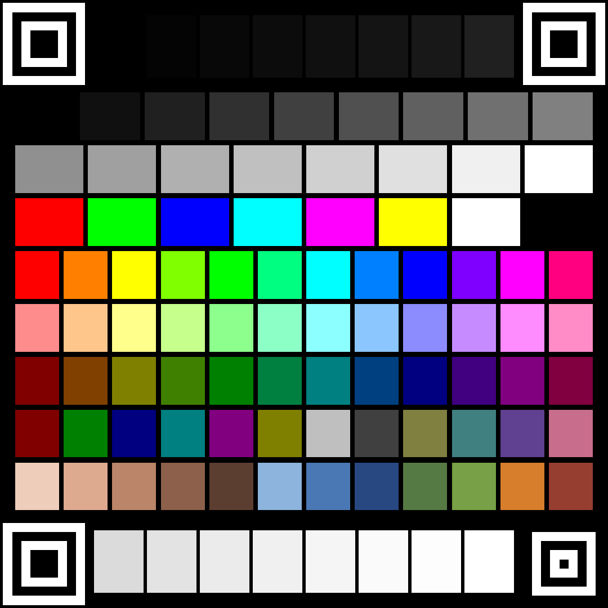

キャプチャ色校正チャート
101パッチのテストチャートです。これをスマホなどの映像ソースに表示し、
キャプチャした結果と見比べることで、「送った色」と「返ってきた色」の差を実測します。
正方形なので、端末を縦に持っても横に持っても大きく映ります。
四隅の位置合わせパターン（QRコードのファインダパターンと同じ仕組み）で位置を割り出すので、
画面の一部にしか映っていなくても、傾いていても、
ブラウザのアドレスバーやステータスバーが写り込んでいても検出できます。
条件は四隅のパターンが4つとも写っていることだけです。

表示したままキャプチャしてください。画面タップまたは Esc で戻ります。
とにかく大きく映してください。
正方形なので向きは問いませんが、大きさは効きます。
写真ビューアで開いている場合は画像をタップしてUIを隠し、
ピンチで画面いっぱいに広げてください。上部のファイル名や下部のツールバーが
出たままだと、チャートはその分だけ小さくなります。
小さく映すと表示側の縮小補間と映像フォーマットの色差圧縮で
隣のパッチの色が混ざり、測定値そのものが濁ります。
画像を保存する
端末の写真ビューアで開いたほうが、ブラウザを経由しないぶん余計な処理が挟まりません。
正方形にした理由。
測定精度を決めるのは1パッチあたりの画素数です。
16:9 のチャートを縦持ちのスマホに表示すると、上下に大きな余白ができて
チャートが小さくなり、パッチが十数ピクセルまで痩せてしまいます。
正方形なら向きを問わず画面の短辺いっぱいまで使えるので、
同じ状況でも1パッチあたりの面積がおよそ2倍になります。
サイズは出力の横幅ではなく短辺に合わせて選んでください。
使いかた
- スマホの明るさ自動調整・Night Shift・画面の色調整を切る。
これらが効いていると測定値が測るたびに変わります。
- チャートを表示する（上のボタン、または保存した画像を写真ビューアで開く）。
四隅のパターンが4つとも映る範囲で、できるだけ大きくしてください。
- PC 側で CaptureInspector
を起動し、「色校正」タブで③ 測定する。
- 結果に応じて④ 補正LUTを保存し、OBS の「LUT を適用」フィルタで読み込む。
LUT より先に確認すること。
「リミテッドレンジがそのまま出力されています」と出た場合は、
まず OBS のソースのプロパティで「色範囲」を『一部』に変えて測定し直してください。
設定ひとつで直る問題を LUT で塗り潰すと、原因が見えなくなります。
またクリップ（黒潰れ・白飛び）は情報が失われているため、LUT では復元できません。
四隅の位置合わせパターン
QRコードのファインダパターンをそのまま借りています。入れ子の正方形は、
中心を通るどの向きの走査線でも
暗:明:暗:明:暗 = 1:1:3:1:1 の比率で交差します。
比率を見るので、大きさにも角度にも依存せずに見つけられます。
左上・右上・左下に大きなファインダパターン（7モジュール）、
右下だけ小さなアライメントパターン（5モジュール）を置いています。
QRコードと同じで、この非対称性が向きを決めます。
見つかった4点から射影変換（ホモグラフィ）を組み、各パッチの位置を逆算して測色します。
形だけで位置を決めているのが要点です。
色でマーカーを識別すると、色ズレを測る道具なのに
その色ズレで位置合わせが不安定になります。QR方式なら
色がどれだけ狂っていても位置合わせは揺らぎません。
チャートの構成
| 行 | 内容 | 分かること |
|---|
| 四隅パターン | ファインダ×3 + アライメント×1 | 位置合わせと向きの判定 |
| グレー 17段 | 0〜255（2行に分割） | 黒/白レベル・ガンマ・チャンネル別ゲイン |
| 黒端 8段 | 0,4,8,12,16,20,24,32 | 暗部のクリップ |
| 白端 8段 | 219〜255 | 明部のクリップ |
| 原色 8色 | RGBCMY + 白黒 | 色域の頂点 |
| 色相 12色 | 彩度100% 明度100% | 色相回転の検出 |
| 色相 12色 | 彩度45%（淡） | マトリクスのフィット用 |
| 色相 12色 | 明度50%（濃） | 暗部での色相ずれ |
| 中間色 12色 | 50%原色・混色 | 中間輝度での線形性 |
| 記憶色 12色 | 肌5・空3・緑2・橙・煉瓦 | 実用上の色ズレ |
色相を等間隔に並べているのは、YUV→RGB のマトリクス誤差が色相環全体を回転させるためです。
手選びの色より等間隔サンプルのほうが回転を捉えやすく、補正マトリクスのフィットも安定します。
彩度45%の行は、飽和して 0 や 255 に張り付いたパッチを除外したあとに残るサンプルを確保するためのものです。
{kind=link}
{kind=link}
{kind=link}